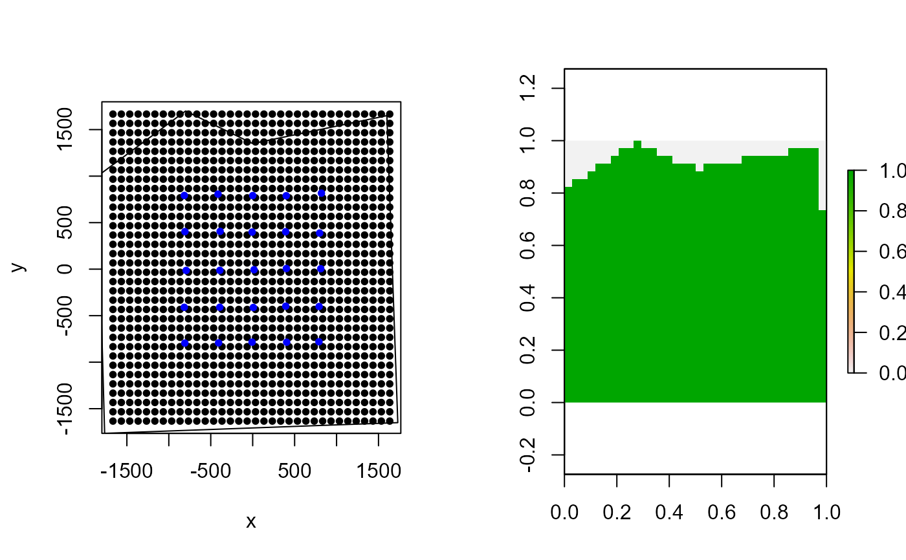
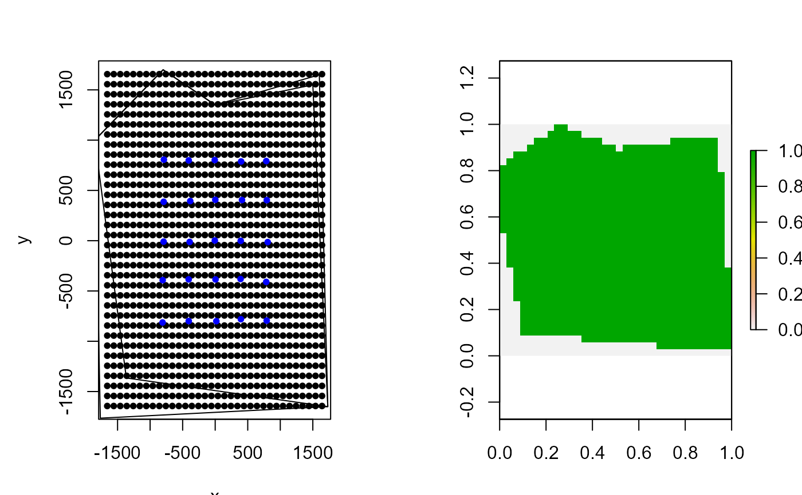
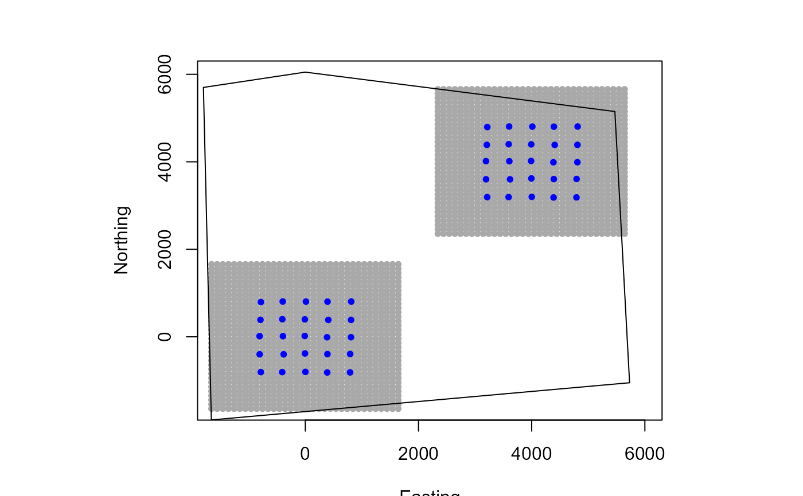
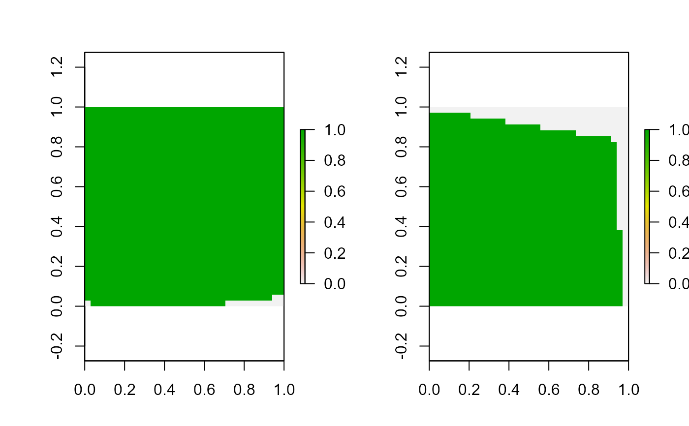

mask_polygon.RdCreates a matrix or array to use as a habitat mask to account for unsuitable habitat.
mask_polygon(poly, grid, crs_, prev_mask)A polygon created using the sf package of class
"sfc_POLYGON"
A matrix or array object of the the state-space grid. This
is returned from grid_classic.
The UTM coordinate reference system (EPSG code) used for your location provided as an integer (e.g., 32608 for WGS 84/UTM Zone 8N).
Either NULL or a previously created habitat mask
matrix or array from mask_polygon or mask_raster.
This allows for habitat masks to be combined to account for different
spatial features.
A matrix or array of 0's and 1's denoting unsuitable and suitable habitat respectively.
This function creates a habitat matrix or array depending upon
whether a 2D (former) or 3D (latter) trap array is used. This matrix can be
directly included as data in Bayesian SCR models run using nimble.
# simulate a single trap array with random positional noise
x <- seq(-800, 800, length.out = 5)
y <- seq(-800, 800, length.out = 5)
traps <- as.matrix(expand.grid(x = x, y = y))
# add some random noise to locations
traps <- traps + runif(prod(dim(traps)),-20,20)
mysigma = 300 # simulate sigma of 300 m
mycrs = 32608 # EPSG for WGS 84 / UTM zone 8N
# create state-space grid and extent
Grid = grid_classic(X = traps, crs_ = mycrs, buff = 3*mysigma, res = 100)
# create polygon to use as a mask
library(sf)
poly = st_sfc(st_polygon(x=list(matrix(c(-1765,-1765,1730,-1650,1600,1650,
0,1350,-800,1700,-1850,1000,-1765,-1765),ncol=2, byrow=TRUE))), crs = mycrs)
# make simple plot
par(mfrow=c(1,2))
plot(Grid$grid, pch=20)
points(traps, col="blue",pch=20)
plot(poly, add=TRUE)
# create habitat mask from polygon
hab_mask = mask_polygon(poly = poly, grid = Grid$grid, crs_ = mycrs,
prev_mask = NULL)
# make simple plot
library(raster)
plot(raster(apply(hab_mask,2,rev)))
# make simple plot
poly2 = st_sfc(st_polygon(x=list(matrix(c(-1365,-1365,1730,-1650,1500,1550,
0,1350,-800,1700,-1850,1000,-1365,-1365),ncol=2, byrow=TRUE))), crs = mycrs)
plot(poly2, add=TRUE)

# mask second polygon, building on previous habitat mask
hab_mask2 = mask_polygon(poly = poly2, grid = Grid$grid, crs_ = mycrs,
prev_mask = hab_mask)
# make simple plot
plot(Grid$grid, pch=20)
points(traps, col="blue",pch=20)
plot(poly, add=TRUE)
plot(poly2, add=TRUE)
plot(raster(apply(hab_mask2,2,rev)))

# create an array of traps, as an approach where individuals will only be
# detected at one of the trap arrays (e.g., Furnas et al. 2018)
Xarray = array(NA, dim=c(nrow(traps),2,2))
Xarray[,,1]=traps
Xarray[,,2]=traps+4000 # shift trapping grid to new locations
# Example of using habitat mask with 3D trap array (need polygon that
# masks both trapping extents)
GridX = grid_classic(X = Xarray, crs_ = mycrs, buff = 3*mysigma, res = 100)
# make simple plot
par(mfrow=c(1,1))
plot(GridX$grid[,,1],xlim=c(-1600,6000),ylim=c(-1600,6000),col="darkgrey",
pch=20,ylab="Northing",xlab="Easting")
points(Xarray[,,1],col="blue",pch=20)
points(GridX$grid[,,2],pch=20,col="darkgrey")
points(Xarray[,,2],col="blue",pch=20)
poly = st_sfc(st_polygon(x=list(matrix(c(-1660,-1900,5730,-1050,5470,5150,
0,6050,-1800,5700,-1660,-1900),ncol=2, byrow=TRUE))), crs = mycrs)
plot(poly, add=TRUE)

# get 3D habitat mask array for 3D grid
hab_mask = mask_polygon(poly = poly, grid = GridX$grid, crs_ = mycrs,
prev_mask = NULL)
# make simple plot
par(mfrow=c(1,2))
apply(hab_mask,3,function(x) plot(raster(apply(x,2,rev))))

#> NULL